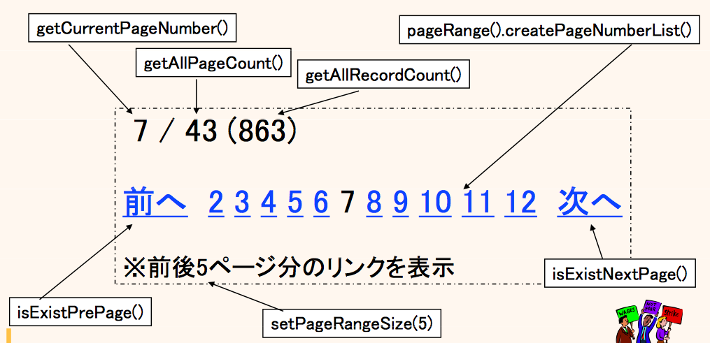

ページング検索
${indexlist}ページング検索とは？
そもそもページング検索とは？について説明するページがあります。
定型化されたページング検索
ConditionBean
一つの ConditionBean でページング検索の総レコード数取得と実データ取得の二つの処理を実行され、ページング条件は最大限DBMSのSQLの機能を使って実現されます。
e.g. ConditionBeanでページング検索 {81-100} @DisplaySql
MemberCB cb = new MemberCB();
cb.query().setMemberName_PrefixSearch("S");
cb.paging(20, 5); // 1 ページ 20 件で、5 ページ目を検索 (81-100)
// 総レコード数取得と実データ取得
PagingResultBean<Member> page = memberBhv.selectPage(cb);
// ページング結果の計算処理
int allRecordCount = page.getAllRecordCount(); // 総レコード数
int allPageCount = page.getAllPageCount(); // 総ページ数
boolean existsPrePage = page.existsPrePage(); // 前のページがあるか？
boolean existsNextPage = page.existsNextPage(); // 次のページがあるか？
for (Member member : page) { // 実データのループ(java.util.Listの実装型)
...
}
そして、検索結果がページング結果の計算ロジックを持っています。
外だしSQL(OutsideSql)
一つの外だしSQLでページング検索の総レコード数取得と実データ取得の二つの処理を実行され、 ページング条件はSQLの機能を利用するか(ManualPaging)、カーソルでの(自動の)絞り込みをするか(AutoPaging)を選択できます。
厳密なパフォーマンス考慮のために "SQLスキップ" を利用する場合は、ManualPaging を利用します。
一方、実装のし易さを考慮して "カーソルスキップ" を利用する場合は、AutoPaging を利用します。
e.g. PostgreSQLでOutsideSqlのManualPagingでページング検索のSQL {81-100} @OutsideSql
/*IF pmb.isPaging()*/
select ...
-- ELSE select count(*)
/*END*/
from ...
where ...
/*IF pmb.isPaging()*/
order by ...
offset /*$pmb.pageStartIndex*/80 limit /*$pmb.fetchSize*/20
/*END*/
e.g. PostgreSQLでOutsideSqlのManualPagingでページング検索の呼び出し {81-100} @Java
SimpleMemberPmb pmb = new SimpleMemberPmb();
pmb.setMemberName_PrefixSearch("S");
pmb.paging(20, 5); // 1 ページ 20 件で、5 ページ目を検索 (81-100)
// 総レコード数取得と実データ取得
PagingResultBean<SimpleMember> page
= memberBhv.outsideSql().manualPaging().selectPage(path, pmb, entityType);
// ページング結果の計算処理
int allRecordCount = page.getAllRecordCount(); // 総レコード数
int allPageCount = page.getAllPageCount(); // 総ページ数
boolean existsPrePage = page.existsPrePage(); // 前のページがあるか？
boolean existsNextPage = page.existsNextPage(); // 次のページがあるか？
for (Member member : page) { // 実データのループ(java.util.Listの実装型)
...
}
そして、検索結果がページング結果の計算ロジックを持っています。
様々な考慮
存在しないページが指定された時の再検索
存在しないページを検索してしまう状況は、二つの要因によって発生します。一つはすれ違い、もう一つは(不意の)ユーザ入力。 そういった場合に、存在する最後のページを再検索します。 この仕組みが組み込まれているため、不意に(矛盾のある)空っぽの画面が表示されにくいようになっています。万が一、この挙動を抑えたい場合は、CB もしくは Pmb の指定で、disablePagingReSelect() を呼び出すと、この再検索の処理を無効にすることができます。
総レコード数取得を後に (つまり、実データが先)
ConditionBean、外だしSQLのどちらにおいても、総レコード数の取得(カウント検索)を、実データの取得(実データ検索)の後に実行します(@since 0.9.9.0A)。 これを、PagingCountLater と呼び、実データの取得だけで総レコード数が判明するような場合に総レコード数の取得処理を省略することができ、その分のパフォーマンスコストを削減することができます。
カウント検索の結合を最小限に
ConditionBeanにおいて、総レコード数の取得の際の検索 "カウント検索" のSQL上の結合(Join)を最小限にします(@since 0.9.8.8)。 これを PagingCountLeastJoin と呼び、そうすることで、結合コストを除外した分パフォーマンス向上が期待できます。
ちなみに、OrderBy はオプションの有無に関わらず自動的にカウント検索では除去されます。
ページングナビゲーション
ページング検索の検索結果である PagingResultBean クラスが、ページングナビゲーションのための計算ロジックを持っており、 より安全に定型的にページングナビゲーション構築のための計算処理を行うことができます。
図 : ページングナビゲーションの対応図 (PageRange) 
{kind=link}
Exampleのススメ
dbflute-basic-example では、テストケースの中で実際にページング検索を利用しています。 また、dbflute-ymir-example や dbflute-sastruts-example では、WEBフレームワークと合わせた場合のページング検索のExampleがあります。 (他の多くのExampleでも同様に利用されています)